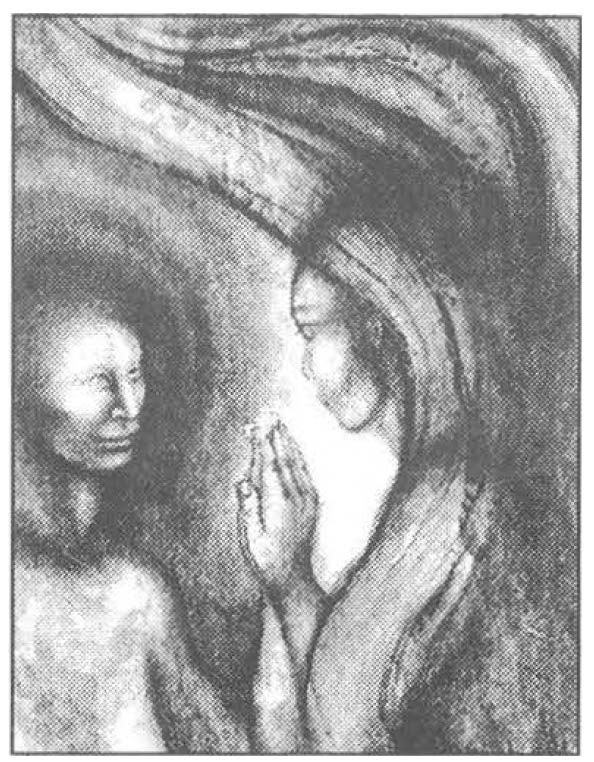

Stanley Krippner, investigator of consciousness, researcher of dreams and myths, author, professor, teacher, and mentor, had much to say about personal mythology. A forward to the 1988 book Krippner co-authored with David Feinstein entitled Personal Mythology: Using Ritual, Dreams, and Imagination to Discover your Inner Story, included the following statement written by June Singer:
"Personal myths structure our awareness and point us in the direction that becomes our path. If we are unacquainted with the contents of our personal mythology, we are carried by it unconsciously, with the result that we confuse what exists objectively in the world with the image of the world supplied to us by our own distorted lenses." (p. xi)
It is not uncommon for a dream to inform the dreamer of some perennial myth that is leading him or her down a path not in the best interest of the dreamer or the species. Core beliefs, which combine to make what Singer calls the "vibrant infrastructure that informs our lives", are perhaps the most entrenched and as such, so difficult to transform. Each person's sense of identity is so intricately interwoven into these core beliefs, that to even consider a change in such a belief feels tantamount to death. A dozen years ago, I had a dream that challenged me to make such a change. Coincidentally, the dream came to me in 1988, the same year Feinstein & Krippner published their book.
The dream seems to have been going on for some time, but my awareness of it begins in a very dark hallway.
I am walking slowly toward a door at the end of the hall. It is necessary for my arms to be stretched out on either side of me to feel my way by touching the walls as I move forward. I take each step cautiously, carefully testing the floor in front of me before I put my foot down. I am not watching myself as in most of my dreams, but am the dreamer walking toward what seems to be a large room, perhaps an old attic-like room, not well lit but somewhat lighter than the hall. As I enter the room, I become aware of what seems to be a freestanding, full-length mirror a few feet in front of me, and in the mirror, I see the image of God. He is enormously tall, and is wearing ivory colored robes. He is carrying an ancient looking leather-bound book, holding it against his left side with his left arm. The book looks very heavy.
Though I try, I cannot see an image of his face. I feel like a lost child who has been wandering the streets in search of something familiar and finally recognizes her home. I am filled with all the emotions of being lost and found interwoven in the same microsecond. I tell the God in the mirror that I have felt so painfully disconnected from him all of my life, though I have believed in him as long as I can remember. I tell him that I have loved him since I was a small child and I want more than anything to dedicate my life to him. In agony, I bow my head and tell God in the mirror that I have been so lonely for his love. It feels as if a lifetime of longing is pouring from my heart. Though I have been speaking with profoundly deep emotion, I become aware that nothing seems to be coming from him. He seems fully detached from what I am expressing. I lift my head from the bowed position and notice that a second mirror has appeared to the left of the first one with another God in it that looks exactly like the God in the first mirror. The two are mirror images of each other, but I know the two are not the same God.
As much as I try, I cannot see this God's face either. A sense of horror fills me that I cannot recognize which God is real and which is false. I call to both of them telling them that I want to follow the true God and franticly look back and forth between the two searching for some sign that will tell me which God is real. Somehow I know that I must make a decision as to which one I will worship and which one I will reject. I beg the real God to come out of the mirror and let me know who he is. I wait terrified and in silence for one to come toward me, but neither moves. Somehow I know that if I select the wrong God, I will die. I fall to my knees. I can feel a mournful sobbing filling my entire body and plead for help. I cannot understand how God could put me in such an untenable position of having to make such a life-threatening choice without being given enough information to choose.
I wake in terror.

Personal Religious History
I grew up in a small Alaskan fishing town nestled between the foot of majestic Mount Marathon and the shores of magnificent Resurrection Bay. I was raised to believe in Jesus and his love, and to fear God. One of the songs of my childhood Sunday- school- experience had a melodic chorus that went something like this: One, two, three, four, five, six, seven. All the children go to heaven. When the master rings the bell, all the bad ones go to hell. Another song I learned had these words: If you don't go to Sunday school, you'll grow up to be bad. If you don't go to Sunday school, you'll someday wish you had. If you want the Lord to be proud of you, you'd better start today, cause the ones who miss the Sunday school, are on the downward way. I spent my childhood years afraid that some-how I might be bad and that God would trick me by letting me go to heaven. I would be safe while the bell rang out. But after the seventh ring my badness would be disclosed for all to know because my little hands were not careful enough for what they were doing, or my little feet were not careful enough for where they were going. After all I had heard the warning in another song: Oh be careful little hands what you do. Oh be careful little hands what you do; for the Great God above is looking down with love, so be careful little hands what you do. The Great God who was the God of judgment would see what my hands had done or where my feet had gone and ring the bell and I would go to hell. If I were sent there, I could never return.
The fundamentalist Christianity of my childhood was a religion where God seems to have a split personality. The loving part of him is expressed in the person of Jesus Christ, God the Son, who came to give me an abundant life, who wanted little children to come to him and who loved all the children. Red or yellow, black or white, all are precious in his sight; Jesus loves the little children of the world.
The other split part of God was the one that ruled creation with cold judgment from a distance. He was the God who had set the date when he would destroy the wickedness of the world. He was God the father who had already decided when he would come to judge the quick and the dead. On that day, he would spew out of his mouth those who were lukewarm and slay those who were sinners. However, if I believed in Jesus, loved him, and obeyed him, the loving son would stand before me, protecting me from the anger and wrath of his father. There was a subtle suggestion that the validity of my belief in Jesus would be established by my sinless actions for I was to go and sin no more-I was to be holy even as Christ Jesus was holy. But in my child-self's heart, I knew I sinned, and I knew I was not holy. I struggled with the dilemma that if my actions were sinless, I would not need anyone to stand in front to protect me from God the father. I would need Jesus to stand in front of me if I was sinful but my sinful actions would be proof that I did not believe, love, or obey adequately enough to deserve the son to protect me from the father. As much as I wanted to believe in the God of love, I was terrified of God the father. I was terrified of the bell and of the moment after the seventh ring.
After attending vacation Bible school at a local church when I was still in primary school, I began a practice that lasted for many years. Each night before going to sleep, I carefully placed my shoes in exactly the right position to be able to slip into them in a single movement in case the end of the world would come in the middle of the night. I knew that the end would come when I least expected it, like a thief in the night. I had images of Resurrection Bay churning with boiling steam exploding off its surface and huge burning rocks falling from a blood red sky and boulders tumbling from Mount Marathon. My only safety would be to run to the mountains and call out to the God of our fathers to save me from destruction. I had gone on hikes up the mountain and knew that there was a whole section that was made of loose, sharp shale. Running up the mountain would cut bare feet so the shoe placement became the solution to bring some relief to a child frightened to the core.
I knew I was supposed to love the God whose deeds were told in another church song, a God who so loved the world he gave his only son to die on Calvary, from sin to set me free, and I knew that my heart did love God. However, I was terrified of the God who would not on.ly send his own son to die, but could also tell his faithful servant, Abraham, to tie up his little boy, Isaac, butcher him with a knife, and bum him at the stake like a sacrificial animal. He had to do this in order to prove his faithfulness.
I was deeply fearful of a God who killed Job's wife, all their children and his livestock just to prove to the devil that Job was faithful. The Bible said that Job was rewarded with a new wife and children, but I wondered about the old ones. What made them so expendable, so replaceable? The woman and children must not have mattered at all to God the father if he could kill them for no other reason than to win an argument. It made no sense to my child-self that a God as powerful as the God of our Fathers was supposed to be would have to prove anything to anybody. I knew I was supposed to love God with all my heart, with all my soul, with all my mind. But I didn't know how to love someone for whom I felt such fear. If he could so easily kill his son, and order the death of Abraham's son, and kill all the children of Job, then I figured I didn't have a chance. In spite of my fears, for many years I was a faithful servant. I attended church; and became an active member of the church youth group. As an adult, I taught Sunday school and sang in the church choir. But when I was a young adult, I made a promise to God and later broke it. I remembered the warning from the Old Testament that we needed to be wary of making promises to God, for breaking them would mean condemnation, and to me, condemnation meant hell. For a dozen years, I taught in a Christian high school, teaching religious history, leading devotions, and at times giving Chapel presentations all intended to exhort students to seek after the God of our Fathers, all the while believing that I, myself, was already condemned to hell.
Questioning
In the mid-1980s my life began to fall apart and the distant unloving God of my childhood seemed even more distant. The therapist I was working with knew how much my heart longed for connection with the creator of the universe and suggested that I might find a new age church to be a lace to heal my heart and find God. In this setting, I heard about the God of love that more closely matched my sense of the God I sought from childhood. I began to attend regularly and felt as if I had finally found a church home. From this new perspective of God, there is only God and only good. Everything else is an illusion. When someone lives outside awareness of love, what is created is the experience of hell that is not real. Other teachings suggest that our thoughts create our reality, so if we are experiencing difficulties, it is our lack of faith in love and our belief in difficulties that cause them to happen.
As I became more involved in the church, it seemed that the judgment of my childhood religion was still present in this new one, and I found that people were as frightened and condemning in one as in the other. Ministers were cheating on their spouses, and the church was suffering from inner conflict and power struggles. I was as sad in the new church as I had been in the old and my heart was still lonely for connection with God. I was also terrified that by questioning my fundamentalist upbringing I had left the God of our Fathers, evidence that I was already condemned. Though I thought I had found the God I had been seeking, I was to discover that this religion did not possess the God of my search either. It was sometime in 1988, in the middle of this sadness and fear that I dreamed the dream of the Gods in the mirrors.
Lucid Dream: Transformation of the Gods in the Mirrors
The dream continued to haunt me. The more I searched, the more disconnected I felt from God, and, yet, the more I felt a deep calling to find the God who created the universe and who loved me. My heart believed in a God of love, but I feared that I had left the God of my Fathers and was chasing after false Gods becoming just another fallen soul paving the way for the Anti-Christ to reap damage on the Earth. The more deeply I investigated my inner world, the more I connected with my psychic abilities, healing energy, shamanic journeying, and multi-leveled dreams that often were prophetic in nature. I saw visions of futures, and dreamed a new path for my life that I took but not without trepidation. In time, I re-entered the dream and returned to the room with the two mirrors and the images of the two Gods. I stood in front of the Gods in the mirrors and told them that I finally had come to realize that neither was the "true" God. They were both reflections of my own beliefs, and only when I released both would I be able to connect with the One I had been seeking all my life, the One who has loved me from the very beginning. I stood in front of the first image, the one to my right, and asked the part of me that carried the heavy book if she would be willing to put the book down. At first she seemed indignant and even hostile. A child's voice coming out of the God in the right hand mirror began to condemn me pouring out quotations of wrath from scripture verses I memorized in my childhood. The book was filled with laws and rules that she believed would help her find God. She refused to put the book down as she continued to chastise me. After listening to her for awhile, I asked her if in all the years she had been carrying the book, following the rules, and judging others as well as herself for breaking the rules, had she found God. She began to sob. Her tears answered my question. I asked her if she would be willing to set the book down now and come to me.
She stepped out of the mirror and collapsed into my arms. I felt such a deep love for this part of me who had been so afraid of breaking the rules that she became the very God she feared. She was the holder of the bell, doing all she could to make it not ring to save me from sure death.
I turned to the image of the God in the second mirror and asked her if she was happy. She smiled and assured me that she was very happy. She told me that she loved me, that she always had. She told me that she loved my father and she understood his agony that led him to do what he had done in his life. She was the personification of innocence and saw the world filled with love.
After careful consideration of her words, l told her that something seemed missing in her belief that there is nothing but good. I asked her what attachment she had to that belief. There was a very long pause. She almost whispered that to see it any other way was to see a universe spinning out of control. If there was both good and bad, and if the God in the other mirror was not the true God with alt the answers, the judgment day. and the bell to ring. then it might happen that the bad could win- and all would be destroyed.
She told me that believing only in love felt so much safer. I stood in front of the mirror on the left in silence. This little child had spoken what l had felt for so long but had never had the courage to voice. I had known that to see darkness in the world would mean that there was darkness in me. and the most frightening thought, darkness in God, which was a thought that had been too devastating to consider. I broke the silence with a simple question. I asked her if it "felt" true that there was no darkness, no badness, no evil. This child part of me began to sob. She had experienced evil being inflicted upon her in the darkness of other people's fear for her whole childhood and she spent a lifetime blocking awareness of what had happened. The more she understood of everything in our lives being reflections of parts of ourselves, the more she had been able to see her own darkness. She saw within her own actions that goodness could come from a camouflaged need to control and that sacrifice could be subtle manipulation hiding anger. She had wanted so much to believe in her goodness that she too often would not look at the darkness inside. I held out my arms to this part of me reflected in the mirror; she looked into my eyes for what seemed a very long time and stepped out of the mirror.
I held this frightened part of myself close to me and told her that every one of us carries both good and evil from which we can choose. but the more we deny what is in us and in others. the more we become unconscious of what we are choosing. As I rocked her in my arms. I explained that I don't understand where evil originated. but that I know it exists in the physical world. I told her that I don't know how to explain God being everything and yet God not being evil. Perhaps when we get to the other side of this life-experience. we will better understand. For now. that is all I could offer to her.
The parts of me reflected as the Gods in the mirrors in my dream had appeared to be so powerful. so demanding, and so sure. They were in such opposition that no matter which I chose, I believed I would surely die. With the embrace of love. the child parts from the mirrors flowed into my heart. As I walked closer to the mirrors, the two mirrors became one and I saw myself reflected back to me. I looked deeply into my own eyes and saw love and fear, sadness and joy. strength and weakness and the most beautiful light in the heart of my heart, a light that filled me with love so overwhelming that a powerful joyful sound rushed like a geyser from my chest into my throat. It filled my entire body and exploded into the room. I finally was able to see the dwelling place of God, creator of the universe. I knew that the heart of my heart was my eternal connecting place. And more deeply than ever before, l felt God in me. The connection I sought from the time when I was a small child finally happened.
The blackness behind the mirror that had reflected back to me my split images of God began to melt and I watched the image of myself fade away leaving a clear window that became a magnificent opening. It felt as if the weight of thousands of years was lifted off of me. My heart felt so full. Light and love seemed to fill the entire room and flow through the ever- expanding window into the outer-world. I felt love for my years of struggle. for my parents and grandparents, and all those who had formed religions in a hope to find God and all those who rebelled against religions to find God, only to create new images. My heart finally knew that God does not live in religion.
God is not split and does not have a checklist to see if I am good or bad. God did not kill sons, order the death of other people's sons, or kill wives and children on a whim. The images that had been in the mirrors were two sides of my own beliefs- one inherited from the religion of my Fathers, and the other from a religion formed in reaction to the one I had inherited. I realized that religions and followers of religions have bowed to gods that were images of themselves in their own mirrors. made visible by the darkness behind the glass. For the first time, I felt safe and my child-self realized that she no longer had to put her shoes alongside the bed.